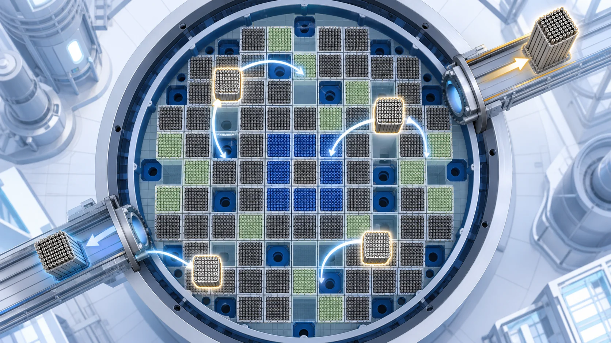
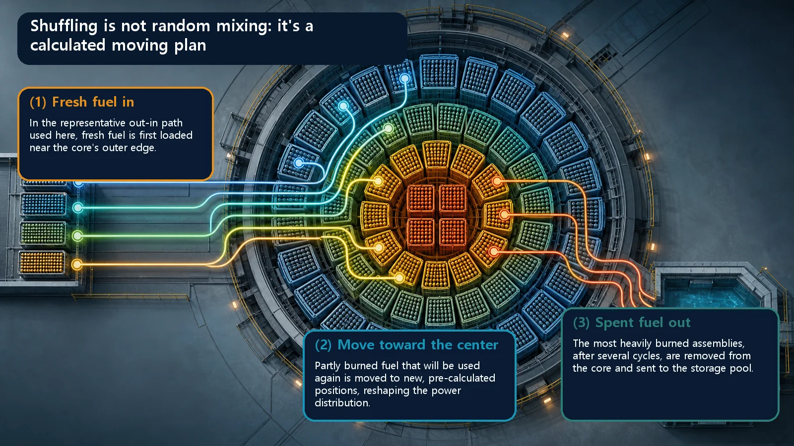
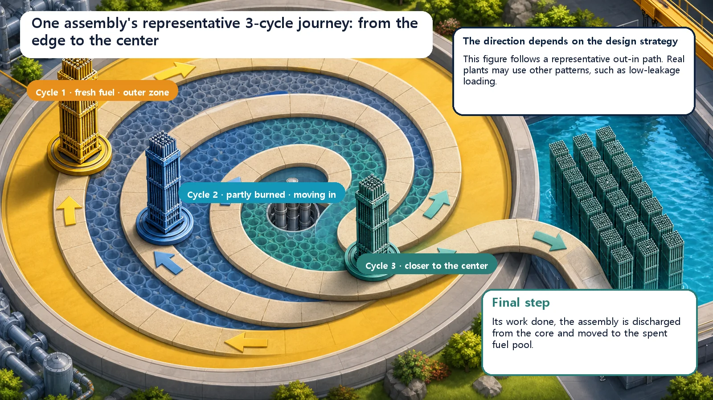

Long-Term Core Behavior & Fuel Cycle · 164
Not a Card Shuffle — Fuel Shuffling, the Art of Rearranging a Reactor Core
At each refueling, the fuel that stays in the core is moved to new positions by a pre-calculated plan, so the whole core burns evenly.

Fuel shuffling means moving partly burned fuel that will be used again to new, pre-calculated positions in the core during refueling. Only the most heavily burned fuel (typically about one-third) is discharged. Mixing eager fresh fuel with tired old fuel keeps power from piling up in one spot, pushing the peaking factor toward 1.
What comes to mind when you hear the word "shuffling"? Probably a dealer's hands riffling a deck of cards, or the shuffle button on a music player. So when people hear that a reactor's fuel is "shuffled," it's easy to picture used fuel being jumbled up at random. In fact it's the exact opposite. Fuel shuffling in a reactor isn't "mixing things up any old way"; it's much closer to a carefully planned seating arrangement in which every single position is calculated and decided in advance.
You don't replace all the fuel?
It's easy to assume that when a reactor is shut down for refueling, all the fuel in the core is swapped out for new fuel. Not so.
Reactor fuel doesn't burn up all at once; it burns slowly over several years. So when a planned operating period ends (typically about a year and a half, though it varies by plant) and the reactor is briefly stopped for refueling, the fuel in the core falls into roughly three groups: fresh fuel that has just come in, middle-aged fuel that has burned for one cycle, and heavily burned fuel that has gone through two or more cycles and reached the end of its life. Only the most heavily burned batch is removed from the core and sent off as spent fuel (usually about one-third of the total), and only that much fresh fuel is added.
That raises the key question: what happens to the two-thirds of the fuel that stays in the core? Does it just stay where it was? This is where shuffling comes in. In one sentence, shuffling is relocating fuel that will be used again next cycle to different positions in the core.
Why move it at all? Because fresh fuel is too eager
Fresh fuel has barely burned, so it has a large capacity to keep fission going (called reactivity). It's the eager new recruit. Fuel that has burned for two cycles, by contrast, has lost much of its strength. What happens if you gather all the eager fresh fuel in the middle of the core? Fission becomes unusually active there alone, and heat piles up in that spot. You get a very bumpy power landscape: some parts of the core seething, others lukewarm.
This concentration is a problem because the hottest spot reaches the limit the fuel can withstand first. The core as a whole still has plenty of room, but one spot is so hot that power can't be raised any further. So it's important to keep the measure of this concentration as low as possible, the ratio of the hottest spot's power to the average power (called the power peaking factor), so that the whole core burns evenly.
That's exactly what shuffling does. Mixing and scattering eager fresh fuel among tired old fuel keeps power from piling up in any one spot and lets the entire core burn evenly, a bit like leveling a jagged city skyline by rearranging tall and short buildings.

Why "mixing" is misleading
Cards are shuffled so the result is random; core shuffling is precisely the opposite. Which fuel goes in which slot is calculated by computer in advance to settle on an optimal map, and the fuel is moved slot by slot exactly according to that map. It's like a theater that doesn't seat people just anywhere but plans a seating chart so everyone gets a good view of the stage.
The representative path we'll follow here is out-in shuffling. Fresh fuel is first loaded around the core's outer edge, and after each cycle of operation the partly burned fuel is moved step by step toward the center. The eager fresh fuel at the edge props up the power distribution, while fuel that has burned further moves to interior positions where its remaining reactivity is put to use. Real plants also widely use low-leakage arrangements that place heavily burned fuel at the edge, so the actual path depends on the core design strategy. Here we focus on the edge-to-center path so the movement itself is easy to see.
Following one fuel assembly
An assembly enters the core brand new. In its first cycle it takes a position near the outer edge and burns hard. When the cycle ends and refueling comes, it isn't discharged; it is moved to a position a little closer to the center. That's shuffling. After the second cycle it moves inward again, and by about the third cycle it gives its final service near the center, using up its remaining reactivity. When that cycle ends, its work done, the assembly leaves the core and heads for the spent fuel pool. This path is a representative example to explain the out-in strategy; actual paths depend on each plant's loading pattern and its safety and economic goals.
So the core gets a slightly new face every cycle but is never replaced wholesale. This steady state, in which fresh, once-burned and twice-burned fuel always run together, is called the equilibrium core, and shuffling is the hand that rearranges the core each cycle while keeping that equilibrium. All this repositioning happens after the reactor is shut down and its lid opened: deep under water, a large machine called the refueling machine picks up and moves the assemblies one at a time, following a pre-planned sequence.

Not to be confused with
Refueling is the whole maintenance operation of shutting the reactor down, servicing the fuel and starting it back up. Shuffling refers only to "moving the fuel that stays," so shuffling is one part of refueling.
The loading pattern is the finished seating chart after shuffling is complete: the result, and the blueprint. Shuffling is the act of moving fuel to make that chart real. If the chart is the list of "who sits where," shuffling is actually showing everyone to their seats.
Burnup measures how much a fuel has been burned. Shuffling ultimately decides where fuels of different burnup go, so the two are inseparable.
Put very simply
Strip away all the complex calculations and shuffling's goal fits in one line:
Power at the hottest spot in the core ÷ average core power → as close to 1 as possible
The closer this value is to 1, the more evenly the whole core burns, which means generous safety margins without worry about local overheating, and thrifty use of fuel. Shuffling is essentially rearranging fuel positions every cycle to pull this value toward 1.
Today's takeaways
- Shuffling means taking partly burned fuel that will be used again next cycle and, instead of leaving it in place, relocating it to other positions in the core during refueling.
- The core isn't replaced wholesale: only the most heavily burned fuel (roughly one-third) is discharged, and the rest is rearranged together with fresh fuel.
- Fresh fuel has high reactivity, so clustering it concentrates power; mixing fresh and old fuel to burn the whole core evenly (power flattening) is a major purpose of shuffling.
- Despite the word "shuffle," it isn't random at all: it is a planned operation that moves fuel slot by slot according to a pre-calculated optimal map (the loading pattern).
- Shuffling is a core management technique that targets power flattening, even burnup and control of neutron leakage and vessel exposure at once, looking after both safety margin and fuel economy.
We've seen how fuel inside the core is managed over time. Next, we'll look at how a core that has run through many cycles differs from a core being started for the very first time.